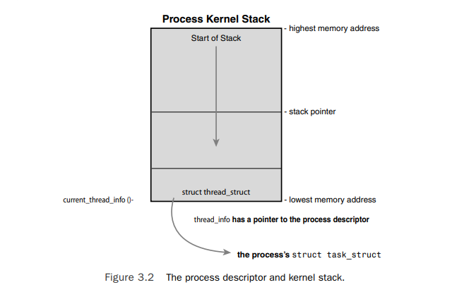
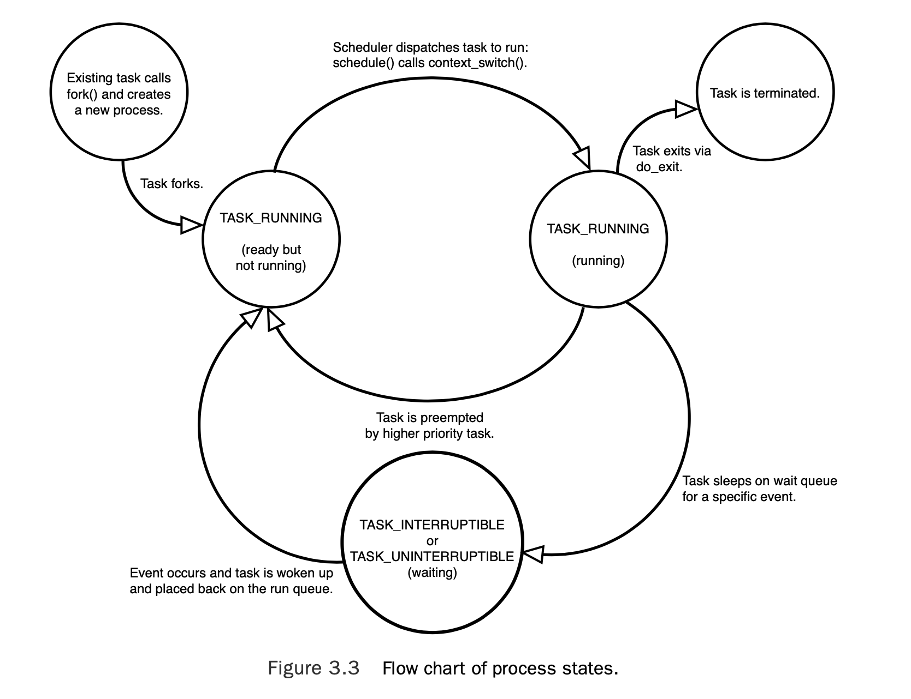
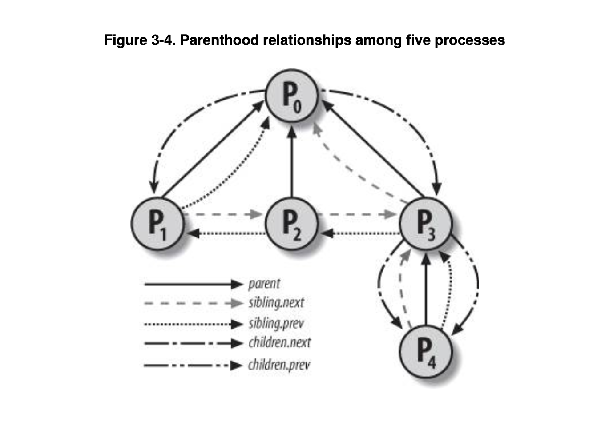
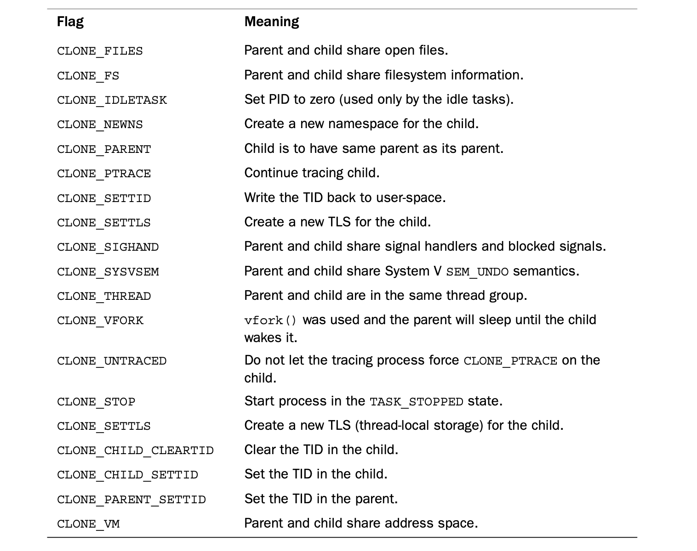

进程
进程是程序运行时实例。包括运行时的代码，数据，相关的资源比如打开文件，pending signals, 内核数据，处理器状态，地址空间，一个或多个执行流（threads of execution） 线程是进程的一个执行流。每个线程包括当前执行上下文（处理器的pc寄存器,通用寄存器，栈寄存器）和栈空间。 Linux的实现不区分线程和进程，对Linux内核而言，线程只是一组共享的某些资源的进程而已。 fock()系统调用创建子进程，子进程使用父进程的拷贝(COW)。父进程调用fork()系统调用后，父子进程同时从fock()系统调用返回处开始执行。fock()系统调用从内核返回用户空间2次。 exec()系统调用创建新的地址空间，并加载新的程序 exit()系统调用终止进程并释放资源。进程终止后进入zombie状态，等待父进程回收。父进程通过wait()或者waitpid()回收子进程的退出状态。
进程描述符
内核将所有进程存储在一个双向循环链表中，叫做 task list。链表中的每个元素是个 struct tast_struct结构体，其中包含该进程的所有信息，叫做进程描述符。 struct tast_struct 相当大,在32位机上大概有1.7KB。包含进程的所有信息，比如打开文件，进程地址空间，pending signals, 进程状态，处理器上下文等等等等。
tast_struct结构体由slap allocator分配。内核如何获取当前运行的进程描述符？在每个进程的内核栈的顶部（内核栈空间固定）存储 struct thread_info,其中包括指向当前运行进程的进程描述符的指针。这样内核直接通过栈寄存器中的值就可以获取到thread_info的地址，从而获取当前进程的描述符，而无需将进程描述符的地址单独用一个寄存器存储，如图所示

thread_info的定义与底层架构相关，在x86架构下的定义如下//<asm/thread_info.h>
struct thread_info {
struct task_struct *task; /* main task structure */
struct exec_domain *exec_domain; /* execution domain */
__u32 flags; /* low level flags */
__u32 status; /* thread synchronous flags */
__u32 cpu; /* current CPU */
int preempt_count; /* 0 => preemptable,
<0 => BUG */
mm_segment_t addr_limit;
struct restart_block restart_block;
void __user *sysenter_return;
int uaccess_err;
};
内核提供current宏可以快速获取当前进程的tast_struct,这个宏的实现也是因不同架构而不同，在x86上，通过存储在内核栈上的thread_info获取. current_thread_info()函数获取thread_info的地址，在x86上通过将%esp寄存器的低13位置零实现（假设栈大小为8KB),汇编代码如下
movl $-THREAD_SIZE, reg;
andl %esp, reg
其中THREAD_SIZE在x86_32中定义如下,为内核栈大小
#ifdef CONFIG_4KSTACKS
#define THREAD_ORDER 0
#else
#define THREAD_ORDER 1
#endif
#define THREAD_SIZE (PAGE_SIZE << THREAD_ORDER)
reg中最终存储栈顶的地址，即为thread_info地址。最后通过task成员获取tast_struct地址
current_thread_info()->task;
进程状态
struct task_struct {
volatile long state; /* -1 unrunnable, 0 runnable, >0 stopped */
//其他。。。。
int exit_state;
}
state表示进程是否可运行状态字段，exit_state表示退出状态字段，
#define TASK_RUNNING 0
#define TASK_INTERRUPTIBLE 1
#define TASK_UNINTERRUPTIBLE 2
#define __TASK_STOPPED 4
#define __TASK_TRACED 8
/* in tsk->exit_state */
#define EXIT_ZOMBIE 16
#define EXIT_DEAD 32
- TASK_RUNNING：要么在运行，要么在等待运行的队列中
- TASK_INTERRUPTIBLE:可中断的睡眠态，等待某个条件满足。或者如果收到信号，也会提前被唤醒。
- TASK_UNINTERRUPTIBLE:不可中断的睡眠态，同TASK_INTERRUPTIBLE一样，也在等待某个条件满足。不同的是这个等待状态不会响应信号被提前唤醒。
- __TASK_TRACED：The process is being traced by another process, such as a debugger, via ptrace syscall
- TASK_STOPPED：Process execution has stopped; the task is not running nor is it eligible to run.This occurs if the task receives the SIGSTOP,SIGTSTP,SIGTTIN, or SIGTTOU signal or if it receives any signal while it is being debugged. (ctrl-z 发送SIGTSTP信号，进程暂停运行，进入TASK_STOPPED状态，后续如果执行bg/fg，应该会发送SIGCONT信号，进程继续在前台或后台运行。也有说TASK_STOPPED状态不响应信号，这里比较混乱，先不管了。TASK_STOPPED状态可恢复到TASK_RUNNING,当进程退出后，state状态不再有效，可能会设置其exit_state状态为EXIT_ZOMBIE)
状态转换图如下

Porcess Context 当用户态进程调用系统调用或者cpu在用户态执行指令时产生异常，会进入内核态执行系统调用例程或者异常处理例程。此时，kernel is said to be "executing on behalf of the process" and is in process context. 当内核例程执行完后，要么该进程返回用户态继续运行，要么有高优先级进程被调度程序调度执行，此时会发生进程上下文切换。 与之相对的是interrupt context,内核在执行中断处理程序时处于interrupt context之下，interrupt context不与任何进程相关。 进程上下文在发生切换时，是需要保存到进程描述符中的，存储在thread字段中，其类型为struct thread_struct,在x86中定义如下
struct task_struct{
//...
/* CPU-specific state of this task */
struct thread_struct thread;
//...
}
struct thread_struct {
/* Cached TLS descriptors: */
struct desc_struct tls_array[GDT_ENTRY_TLS_ENTRIES];
unsigned long sp0;
unsigned long sp;
#ifdef CONFIG_X86_32
unsigned long sysenter_cs;
#else
unsigned long usersp; /* Copy from PDA */
unsigned short es;
unsigned short ds;
unsigned short fsindex;
unsigned short gsindex;
#endif
#ifdef CONFIG_X86_32
unsigned long ip;
#endif
#ifdef CONFIG_X86_64
unsigned long fs;
#endif
unsigned long gs;
/* Save middle states of ptrace breakpoints */
struct perf_event *ptrace_bps[HBP_NUM];
/* Debug status used for traps, single steps, etc... */
unsigned long debugreg6;
/* Keep track of the exact dr7 value set by the user */
unsigned long ptrace_dr7;
/* Fault info: */
unsigned long cr2;
unsigned long trap_no;
unsigned long error_code;
/* floating point and extended processor state */
union thread_xstate *xstate;
#ifdef CONFIG_X86_32
/* Virtual 86 mode info */
struct vm86_struct __user *vm86_info;
unsigned long screen_bitmap;
unsigned long v86flags;
unsigned long v86mask;
unsigned long saved_sp0;
unsigned int saved_fs;
unsigned int saved_gs;
#endif
/* IO permissions: */
unsigned long *io_bitmap_ptr;
unsigned long iopl;
/* Max allowed port in the bitmap, in bytes: */
unsigned io_bitmap_max;
/* MSR_IA32_DEBUGCTLMSR value to switch in if TIF_DEBUGCTLMSR is set. */
unsigned long debugctlmsr;
/* Debug Store context; see asm/ds.h */
struct ds_context *ds_ctx;
};
The Process Family Tree 进程之间的父子，兄弟关系也存储在进程描述符中,如下
struct task_struct{
//...
struct task_struct *parent; /* recipient of SIGCHLD, wait4() reports */
struct list_head children; /* list of my children */
struct list_head sibling; /* linkage in my parent's children list */
}
获取当前进程的父进程如下
struct task_struct *my_parent=current->parent;
获取当前进程的所有子进程代码如下
struct task_struct *task;
struct list_head *list;
list_for_each(list,¤t->children){
task=list_entry(list,struct task_struct,sibling);
/* task now points to one of current's children */
}
需要注意的是，list_entry 最后的字段名使用的是sibling,因为children.next指向的list_head是其第一个孩子的sibling字段，最后一个孩子的sibling.next指向自己,表示孩子链表的结束。其结构如下所示

对于list的操作，定义在同时init进程的进程描述符被静态的存储到全局变量 init_task中，我们可以从任意进程开始追溯一直到init进程，如下代码总是可以成功的(不会崩溃或死循环)
struct task_struct *task;
for(task=current;task!=&init_task;task=task->parent);
/*task now points to init*/
内核中所有的进程描述符由task_struct结构体中的tasks字段连接成双链表，故而我们可以从当前的进程遍历到任意进程。获取下一个进程的描述符代码如下
list_entry(task->tasks.next,struct task_struct,tasks)
获取前一个进程的描述符代码如下
list_entry(task->tasks.prev,struct task_struct,tasks)
进程创建
fork(),创建子进程描述符，拷贝父进程资源（对page frame的拷贝是写时拷贝）。 exec()，释放原先的地址空间资源，创建新的地址空间，加载新的可执文件到地址空间中。
fork()->clone()->do_fork()->copy_process():
- dup_task_struct(),创建内核栈，thread_info structure, task_struct. 这些结构体字段中的值与当前进程中的一样。此时，父子进程的进程描述符完全一样。
- 然后检查当前用户可创建的进程限制，确保没有超过
- 子进程描述符中的一些字段被清空或者设置到initial values。这些不继承父进程描述符的字段大部分都是统计相关的信息。
- 子进程状态被设置为 TASK_UNINTERRUPTIBLE
- call copy_flags()设置task_struct.flag，PF_SUPERPRIV flag被清空，表明该进程不具有super-user privileges,PF_FORKNOEXEC flag被设置，表明该进程没有执行exec()
- call alloc_pid()给新进程设置pid
- 取决于clone()系统调用传递的flags,copy_process()要么拷贝，要么共享以下资源：打开文件表，filesystem information, signal handlers, 进程地址空间，namespace。通常对于进程而言，这些资源是拷贝的，对于线程而言是共享的。
- 最后做一些清理工作（比如解锁）并返回指向进程描述符的指针。
linux对线程的实现
相比于其他系统，比如Microsoft Windows or Sun Solaris，对于thread的有专门的内核实现(lightweight processes)。linux对于线程和实现和进程一样，在内核中没有专门实现线程的数据结构，线程只是共享了资源的一组进程而已。
clone flags:

pthread创建的线程使用的flag:
//pthread 线程使用的clone_flag
const int clone_flags = (CLONE_VM | CLONE_FS | CLONE_FILES | CLONE_SYSVSEM
| CLONE_SIGHAND | CLONE_THREAD // ！！注意到这个 CLONE_THREAD flag
| CLONE_SETTLS | CLONE_PARENT_SETTID
| CLONE_CHILD_CLEARTID
| 0);
/*
CLONE_VM：线程与调用线程共享相同的文件系统环境，包括它们的文件系统视图和挂载信息。这意味着，例如，如果一个线程改变了它的当前工作目录，其他共享相同文件系统信息的线程的当前工作目录也会改变。同样，如果一个线程执行了一个挂载操作，其他线程也会看到这个挂载的变化。
新线程与调用线程共享虚地址空间。
CLONE_FS：新线程与调用线程共享相同的文件系统环境，包括它们的文件系统视图和挂载信息。这意味着，例如，如果一个线程改变了它的当前工作目录，其他共享相同文件系统信息的线程的当前工作目录也会改变。同样，如果一个线程执行了一个挂载操作，其他线程也会看到这个挂载的变化。
CLONE_FILES：新线程与调用线程共享打开的文件描述符表。
CLONE_SYSVSEM：新线程与调用线程共享信号量，意味着父线程因信号量的访问操作而阻塞，子线程如果执行信号量访问操作，也会被阻塞。反之，如果父线程因信号量的释放而解除阻塞，子线程也会解除阻塞。
CLONE_SIGHAND：新线程与调用线程共享信号处理函数表。
CLONE_THREAD：新线程与调用线程属于同一个线程组，这样它们可以共享进程ID。这是线程创建的关键标志，因为它使得新创建的线程在Linux内核中被视为线程而不是进程。
CLONE_SETTLS：为新线程指定线程局部存储（Thread Local Storage, TLS）的地址。（TLS是一种机制，允许每个线程拥有自己的变量副本，即使这些变量在全局或静态数据区域内定义。这通常用于存储每个线程的局部数据，如线程ID、错误代码、全局变量的线程特定值等。）
CLONE_PARENT_SETTID：将新线程的线程ID（TID）写入父进程指定的内存位置。
CLONE_CHILD_CLEARTID：当新线程退出时，内核会清空新线程的TID所对应的内存位置。
*/
对于fork()而言，其clone调用为clone(SIGCHLD,0)，也就是没有使用clone flag
kernel threads
kernel threads 只运行在内核地址空间中，不会访问用户地址空间，其task_struct中的mm指针为null。kernel threads 也同其他进程一样，可调度，可被抢占（preemptable）. kernel process创建其他kernel thread,其接口为
struct task_struct *kthread_create(int (*threadfn)(void *data),
void *data,
const char namefmt[],
...)
新的进程由clone()系统调用创建，新进程运行 threadfn,参数为data.新的进程创建后不会运行，需要调用wake_up_process().
kthread_run()创建内核线程并运行，其实现为宏
#define kthread_run(threadfn, data, namefmt, ...) \
({ \
struct task_struct *__k \
= kthread_create(threadfn, data, namefmt, ## __VA_ARGS__); \
if (!IS_ERR(__k)) \
wake_up_process(__k); \
__k; \
})
运行后，要么自己显式调用 do_exit(),要么别的内核部分调用kthread_stop()
通常linux内核在启动时创建kernel threads,一直运行到系统关机。
进程终止
正常退出：显示调用exit(),或者隐式在main之后由编译器places a call to exit()。
非正常退出:无法处理或忽略的信号或者异常。
无论是怎么退出的，最终退出的大部分工作都有do_exit()处理，其定义在kernel/exit.c中
- 给 task_struct中的flags字段设置 PF_EXITING标志。
- call del_timer_sync()移除该进程的内核 timers. 保证在该调用退出后，不会有任何timer被queued,不会有timer的handler在运行
- If BSD process accounting is enabled, do_exit() calls acct_update_integrals() to write out accounting information.
- call exit_mm(), release mm_struct，如果没有别的进程使用该地址空间，地址空间被清除
- call exit_sem(),如果进程在等待ipc semaphore,dequeued.
- call exit_files(), exit_fs(), decrement usage count of objects related to file descriptors and filesystem data。if count reaches zero, the object is destroyed.
- set task_struct exit_code member to code provided by exit(), or whatever kernel decided。
- call exit_notify(),给task's parent 发信号，将自己的所有子进程reparent到thread group中的其他进程或者init 进程， 设置task_struct 的exit_state为EXIT_ZOMBIE （注意这里如果是线程，且不是线程组的组长，则会直接reap 调自己的task_struct, 而不会进入zombie状态。详见 https://juejin.cn/post/7169830336166101022）
- do_exit()最后调用schedule()，切换到别的进程。do_exit()不会return.
到这一步之后，该进程所剩下没被清理的资源就是其kernel stack, thread_info structure, task_struct structure. 这些留下的信息用于给父进程获取，当父进程获取后，或者父进程表示其不感兴趣，剩下的资源会被释放。
最终对进程描述符释放的过程是release_task()完成的：
- call exit_signal()->unhash_process()->detach_pid(), remove process from pidhash, remove process from task list
- __exit_signal()release any remaining resources used by now dead process and finalizes statistics and bookkeeping.
- 如果该进程是thread group 最后一个进程，并且其leader是zombie,则通知zombie leader's parent.
- call put_task_struct()，free pages containing the kernel stack and thread_info structure. 并且释放task_struct到相关的slab cache.
这一步完成后，该进程相关的任何资源都被彻底释放了。 进程退出时，其子进程需要reparent到进程组中的其他进程，或者init进程，do_exit()->exit_notify()->forget_original_parent()->find_new_repaer():
static struct task_struct *find_new_reaper(struct task_struct *father)
{
struct pid_namespace *pid_ns = task_active_pid_ns(father);
struct task_struct *thread;
thread = father;
//遍历同进程组其他进程，如果存在并且不是在退出，则返回该进程作为子进程的父进程。
while_each_thread(father, thread) {
if (thread->flags & PF_EXITING)
continue;
if (unlikely(pid_ns->child_reaper == father))
pid_ns->child_reaper = thread;
return thread;
}
//如果要退出的就是该namespce的init进程
if (unlikely(pid_ns->child_reaper == father)) {
write_unlock_irq(&tasklist_lock);
//如果是init_pid_ns就出错了
if (unlikely(pid_ns == &init_pid_ns))
panic("Attempted to kill init!");
//这个函数应该是让该namespace的其他进程退出
zap_pid_ns_processes(pid_ns);
write_lock_irq(&tasklist_lock);
/*
* We can not clear ->child_reaper or leave it alone.
* There may by stealth EXIT_DEAD tasks on ->children,
* forget_original_parent() must move them somewhere.
*/
//设置reaper为init进程
pid_ns->child_reaper = init_pid_ns.child_reaper;
}
//否则返回该pid命名空间的init进程
return pid_ns->child_reaper;
}